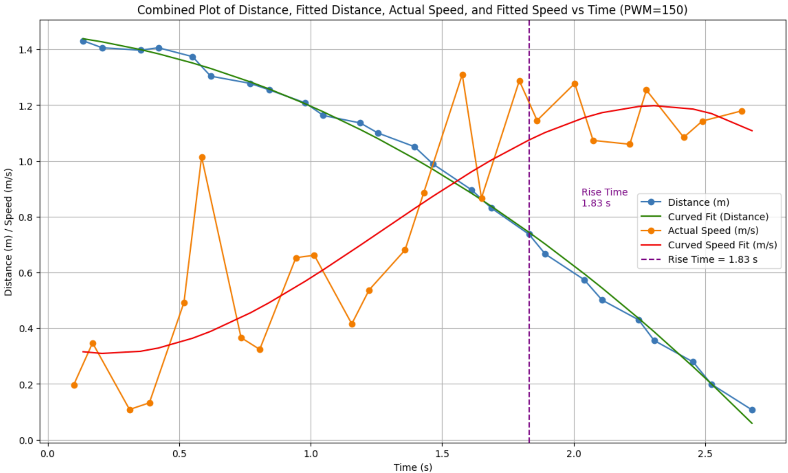
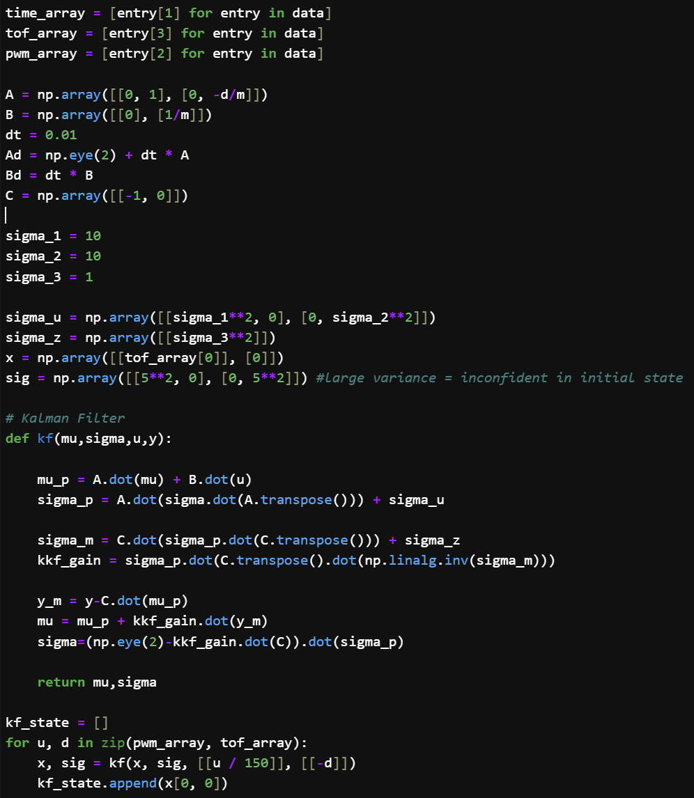
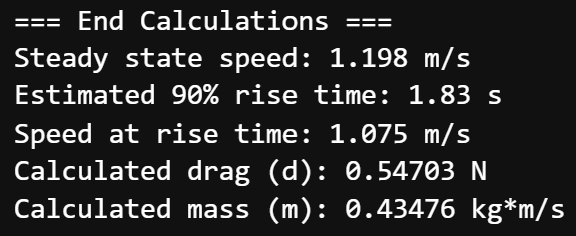
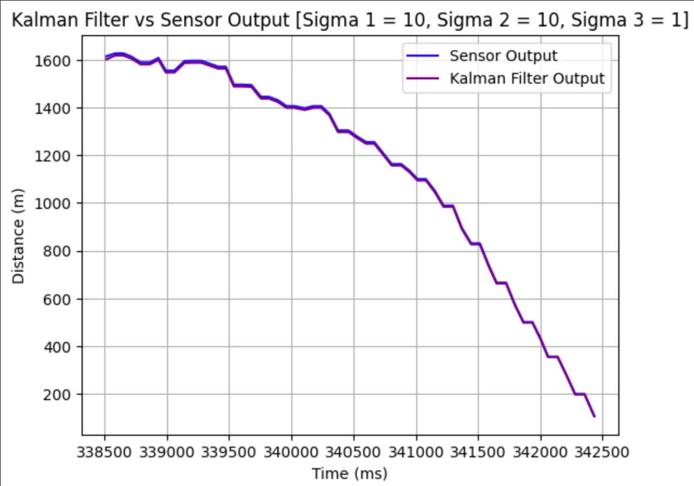
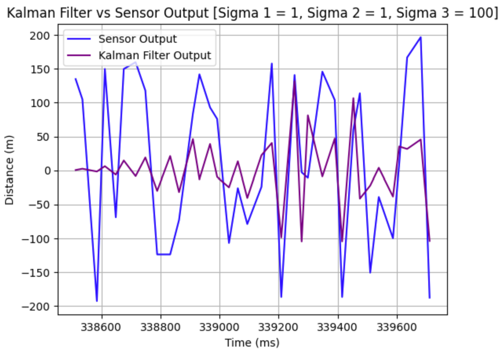
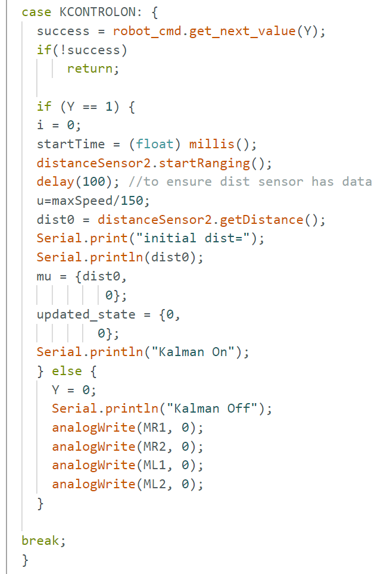
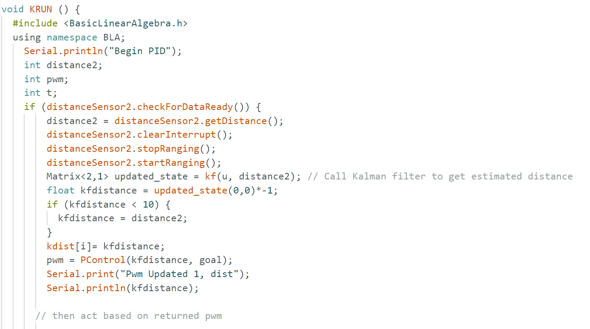

I estimated the drag and momentum terms for my A and B matrices using a step response. I drove the car towards a wall at a constant input motor speed while logging motor input values and ToF sensor output. The step size used was u(t) = 150 PWM, the maximum from Lab 5. Data was collected far enough from the wall to ensure the car reached steady state. The step response was plotted in Python to calculate drag and mass, as shown below.
Graph of Step Response:
To gather this data, I modified one loop of my Lab 5 code to use a constant PWM of 150 instead of recalculating each time. This simplified starting, stopping, and transferring data.
Next, I computed the A and B matrices based on the drag (d) and mass (m) values found and discretized them. My sampling time was 98 ms from prior labs. I defined the C matrix and initialized the state vector using the first TOF distance reading, assuming zero initial velocity. C = np.array([[-1, 0]]), x = np.array([[tof_array[0]], [0]])
Python Code for calculating drag (d) & mass (m):
Outputs:
Sigma_1: Represents position uncertainty. Larger values place more trust in sensor measurements over model predictions.
Sigma_2: Reflects velocity uncertainty. Increasing this makes the filter rely more on sensor data for velocity estimation.
Sigma_3: Represents sensor data uncertainty. Larger sigma_3 makes the filter trust model predictions over noisy sensor readings.
I used sigma values: sigma_1 = 10, sigma_2 = 10, sigma_3 = 1. This setup places more trust in the sensor readings. The effect of varying these values can be seen in the plots below.
Plots with varying sigma values:
Chosen sigma values:
I tested the filter with randomly generated noisy sensor data, similar to examples from previous years. The filter reduced sensor noise, although it wasn’t perfectly stable compared to some flat-line results from others. I set sigma_3 higher to represent a scenario with increased sensor noise, which resulted in more model reliance.
Noisy data with Kalman filter applied:
I implemented the Kalman filter on the robot by following a similar method to Labs 5 and 6. I wrote a function in Python to turn the filter on, which initialized inputs, called the filter, and returned PWM outputs. Then another funtion transfered the array data to python. My car still required a higher base PWM (50) to move, making it slightly difficult to reach the precise target distance. The results are shown in the graph and video below, where the car no longer overshoots but still stops slightly too far away.
Filter on:  Main body code snipt: When everything stops working, step one is to charge your battery. This lab required a ton of debugging when code wasn't running smoothly, which helped me to understand how the given code ran. Filtering like this is pretty cool and I'd like to get to work with it more in the future.